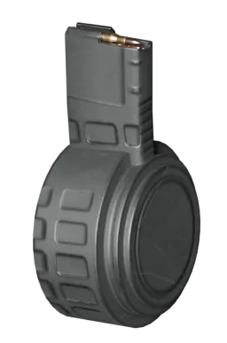
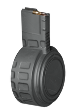
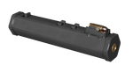
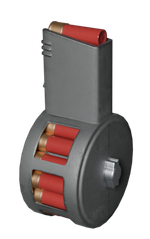

弹鼓
Drum Magazine

配件详情
描述
该弹匣的弹药容量极大，但较笨重。
配件类型
弹匣 配件
弹鼓是一种弹匣配件，提供更大的弹药容量，但代价是降低人体工学并占用更多弹匣槽位。
变体
| Icon | 变体 | Weapon | 解锁等级 | 解锁费用 | 效果 |
|---|---|---|---|---|---|
 |
解放者 | 解放者 Concussive | 武器等级 1 |  0 0
|
人体工学 -15, 容量 60 发, 4 初始弹匣, 6 最大弹匣, 3.5s 完整换弹, 2.3s 部分换弹 |
| 解放者 | 武器等级 24 | 25,000
| |||
| 解放者 Penetrator | |||||
| Suppressor | Suppressor | 武器等级 24 | 25,000
|
人体工学 -15, 容量 60 发, 4 初始弹匣, 6 最大弹匣, 3.5s 完整换弹, 2.5s 部分换弹 | |
 |
捍卫者 | Pummeler | 武器等级 23 | 25,000
|
人体工学 -15, 容量 75 发, 3 初始弹匣, 4 最大弹匣, 3.3s 完整换弹, 2.3s 部分换弹 |
| 捍卫者 | 武器等级 24 | ||||
 |
Breaker (Regular) | Breaker 燃烧弹 | 武器等级 1 | 0
|
人体工学 -15, 容量 26 发, 3 初始弹匣, 4 最大弹匣, 3s 完整换弹, 2s 部分换弹 |
| Breaker | 武器等级 24 | 25,000
| |||
| Stoker | Stoker | 武器等级 24 | 25,000
|
人体工学 -15, 容量 60 发, 3 初始弹匣, 4 最大弹匣, 3.3s 完整换弹, 2s 部分换弹 |
配件
2x Tube Red Dot • 10x Sniper Scope • 4x Combat Scope • Holographic Sight • 反射式瞄准镜 • 否 Optics • 反射式瞄准镜 Mk2 • 1.5x Tube Red Dot • Iron Sight

Muzzle
弹匣